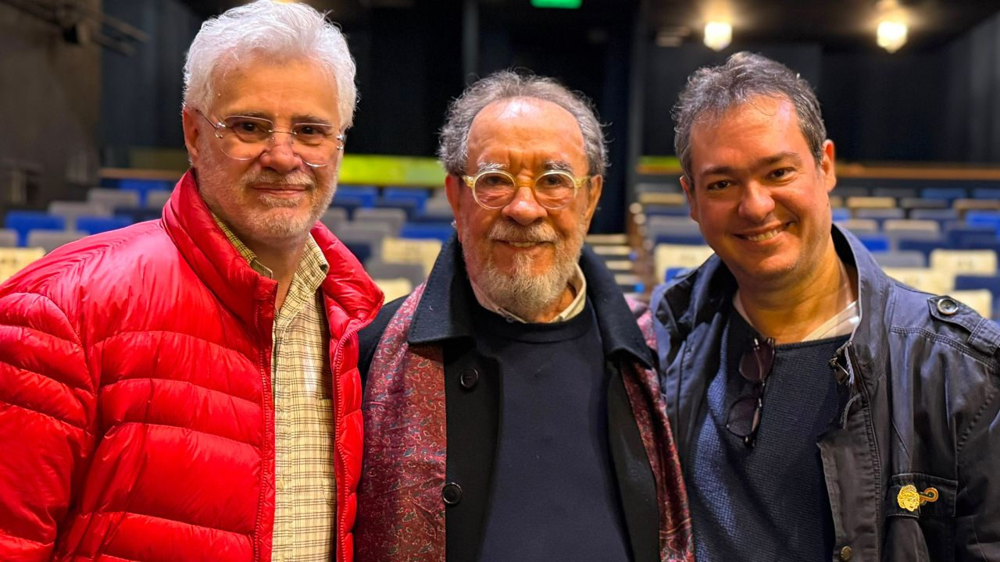

“Olga”, de Fernando Morais, vai ganhar adaptação inédita para o teatro musical

Com direção de Tadeu Aguiar, montagem sobre Olga Benário tem estreia prevista para 2027, ano que marca os 85 anos de sua morte
Um dos livros mais conhecidos de Fernando Morais vai ganhar uma versão inédita para o teatro musical. “Olga”, biografia de Olga Benário Prestes, será adaptada para os palcos em uma montagem produzida pela Estamos Aqui Produções, com estreia prevista para o segundo semestre de 2027.
O projeto terá direção de Tadeu Aguiar, direção musical de Thalyson Rodrigues, composições originais e arranjos de Laura Visconti e letras assinadas por Eduardo Bakr. A adaptação marca uma nova colaboração entre Fernando Morais, Bakr e Aguiar, que trabalharam juntos em “Chatô e os Diários Associados”, musical inspirado na trajetória de Assis Chateaubriand.
Publicado originalmente em 1985, “Olga” reconstrói a trajetória de Olga Benário, militante comunista alemã de origem judaica que veio ao Brasil ao lado de Luís Carlos Prestes. Grávida, ela foi deportada pelo governo brasileiro para a Alemanha nazista, onde foi presa pela Gestapo e posteriormente assassinada em um campo de extermínio.
A nova montagem tem previsão de estreia em um ano simbólico. Em 2027, completam-se 85 anos da morte de Olga Benário, assassinada em abril de 1942 no campo de extermínio de Bernburg. A efeméride deve atravessar o projeto, que parte de uma história marcada por militância política, perseguição, maternidade, violência de Estado e memória histórica.
A obra de Fernando Morais já passou por diferentes formatos. Além do impacto editorial, a biografia foi adaptada para o cinema em 2004, em filme dirigido por Jayme Monjardim e protagonizado por Camila Morgado. Agora, a história chega a um novo território artístico, com a proposta de transformar a narrativa biográfica em teatro musical.
A produção também representa mais um passo da Estamos Aqui Produções na criação e circulação de grandes musicais no Brasil. A empresa esteve à frente de montagens como “Quase Normal”, “A Cor Púrpura”, “Querido Evan Hansen” e “Diana – A Princesa do Povo”, além de projetos recentes ligados ao teatro musical contemporâneo.
Ainda não foram divulgados elenco, teatro, cidade de estreia, datas específicas ou informações de venda de ingressos. Segundo o anúncio, o processo de desenvolvimento da montagem será iniciado nos próximos meses.
Ao levar “Olga” ao teatro musical, Fernando Morais e Eduardo Bakr retomam uma história que permanece associada a debates sobre autoritarismo, memória, perseguição política e resistência. A montagem prevista para 2027 deve revisitar a trajetória de Olga Benário a partir de uma linguagem ainda inédita para a obra nos palcos brasileiros.
Serviço
Olga — adaptação musical
Baseado no livro: “Olga”, de Fernando Morais
Direção: Tadeu Aguiar
Direção musical: Thalyson Rodrigues
Letras: Eduardo Bakr
Composições originais e arranjos: Laura Visconti
Produção: Estamos Aqui Produções